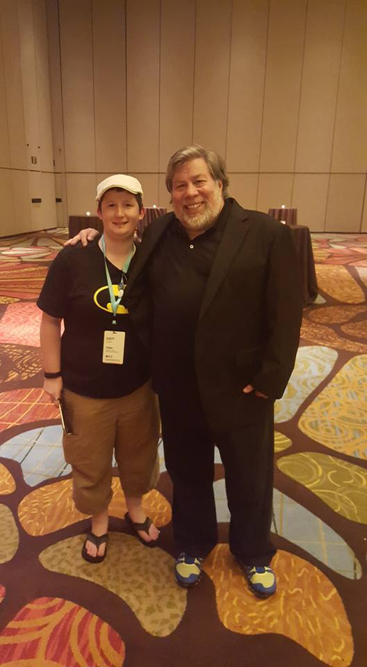

How Software Development saved my life
So I have been thinking for a while now about writing a blog, maybe even getting into public speaking and I was never sure where to start. I decided on a topic close to my heart, Code, and how much it means to me.
Anyone that knows me knows I love to talk, especially about programming and specifically Xamarin, but we will get on to that in a future post or this will turn into an essay.
As many people know or may work out from interacting with me, I am on the Autistic Spectrum. I was diagnosed with Dyspraxia when I was 7 or 8, and Asperger’s Syndrome was mentioned but not taken seriously enough back then to officially be diagnosed.
When I was a child and couldn’t fully understand the world or how people think, I was a loner. I struggled to make friends, the other children didn’t quite know how to handle me and vice versa so the many outnumbered the few and I ended up wandering the playground feeling like an outsider. This continued into my older years but as we all grew up instead of exclusion it also included mild bullying. Like a lot of teenagers who struggle to make friends, I hated my life.
In 2008 everything changed without me realising at the time. I began college doing a vocational IT Course and one of the modules we had to take was the equivalent of Programming 101. I loved it. I loved how you could go from nothing to producing an output on your computer in a matter of minutes. Even now, I get an adrenaline rush whenever I discover something new and exciting, create something I deem ‘cool’ or solve a problem I have been battling with for hours.
But it wasn’t just the coding itself that gave me something to love about life, it was the friends that coding brought into my life. Someone in my class, who had been programming for years, saw my passion for it, took me under his wing and told me that if I loved programming, I shouldn’t learn a language as pointless as VB6.net (his words, not mine, no hate please) and he introduced me to C#. But it wasn’t just the teaching he spent hours giving me, it was the trips to his house to learn which led to spending time ‘hanging out’ as well, and the friends of his that I gained by becoming part of his circle.
I have been blessed since before then with amazing Internet friends I couldn’t begin to describe how amazing they are, but this was the first time I had true real life friends I saw nearly every day and felt like a key member of their group. Friends who walked faster than me (common occurrence at 5 ft 3 with short strides) but paused to check I wasn’t being left behind or walked slower for me. That is a subconscious social cue that someone is part of your group and it meant the world to me.
I was 19 years old when this happened, I already struggled with depression and sometimes I just wished I was dead but this group of friends gave me a reason to live, like people locally outside my family truly cared about me. Over the following 2 years together, they gave me confidence, taught me to love myself because they did too and taught me how to be a friend. Skills which I have carried forward into my adult years and have allowed me to now be surrounded by amazing people.
I owe a large part of this to Software Development. All it took was discovering this amazing thing to help me show the world I might be different but I am a worthwhile friend to have.
In recent years I have discovered fellow nerds in my local tech community who have been incredible. I only know a few of them in real life but one of them has gone above and beyond to teach me languages and concepts I don’t use in my professional life, to the point I am even flying out to Helsinki in July to have a coding weekend away because he lives out there now. Others in the group helped me get my current job, helping me with interview prep, encouraging me to go for it and believe in myself. Some even offer moral support when I am suffering from Imposter Syndrome or having a bad day. Tech people can be so lovely.
In another post I will talk about Xamarin and how C# came back in my life but for now I just wanted to take a moment to thank Coding for what it has done to my life.
If I had to sum up in a few words what it has done for me I would say “passion, hope, friends, career and hobbies”.
I hope this post helps begin to explain at least some of the reasons why I am so passionate about what I do.
